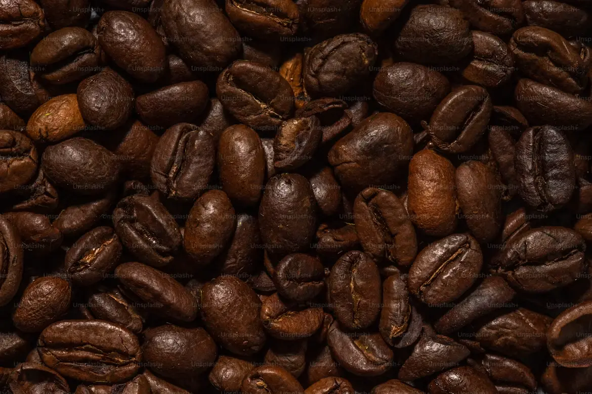
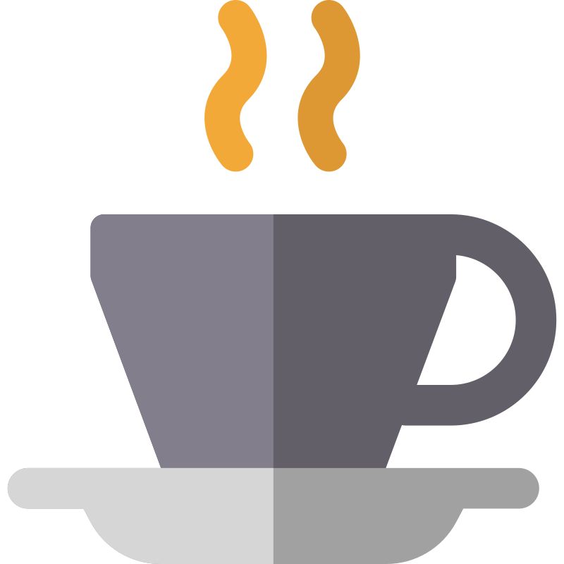
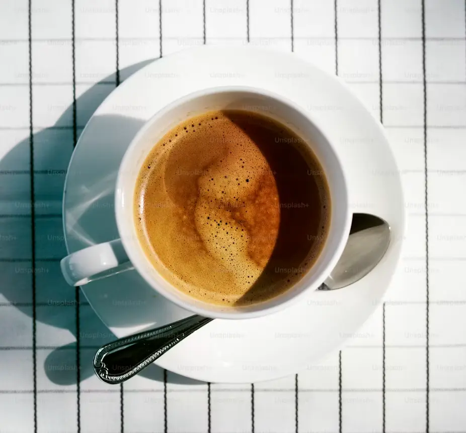
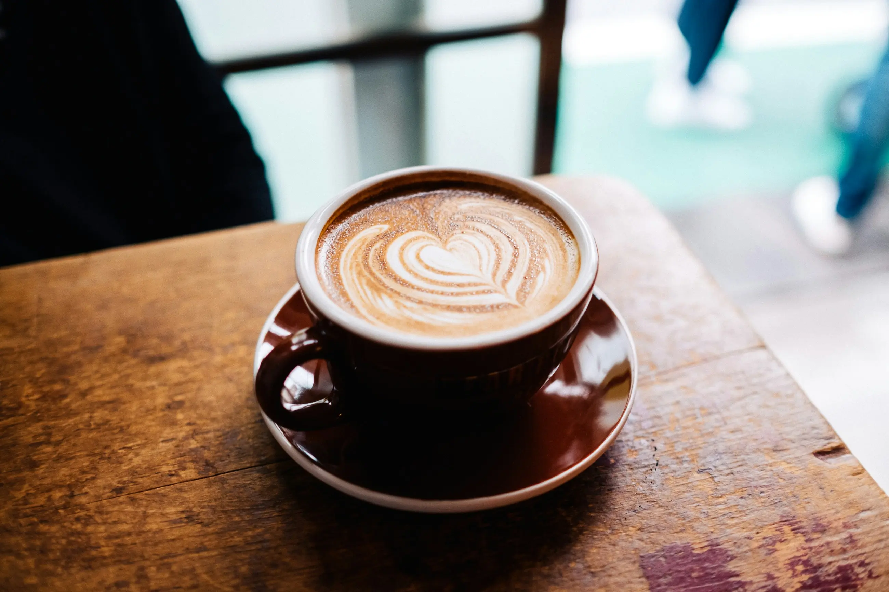

1. Café intenso y delicia
Granos de café tostados, con tonos intensos y naturales que reflejan su aroma, sabor y frescura.

Descubre cafés seleccionados de distintas fincas del Perú, cultivados con dedicación para ofrecerte un aroma único y un sabor especial en cada taza

Granos de café tostados, con tonos intensos y naturales que reflejan su aroma, sabor y frescura.

Una taza de café recién preparado, perfecta para disfrutar de su aroma y sabor en un momento de tranquilidad.

Una taza de café con un delicado corazón, que invita a disfrutar de su sabor y de un momento especial.
| Dulce Café | Tiempo Estimado | Precio |
|---|---|---|
| Café Cremolada | 10-15 min hábiles | S/5.50 |
| Café bombón | 1 a 5 min hábiles | S/ 12.90 |
| Café mocha | 3 a 7 min hábiles | S/ 13.00 |
| *Pedido de 3 cafés para lleevar | S/ 31.40 |